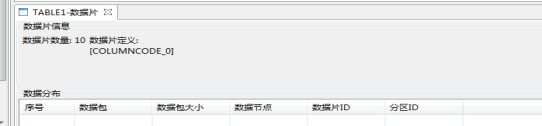
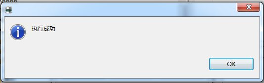
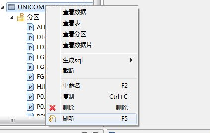
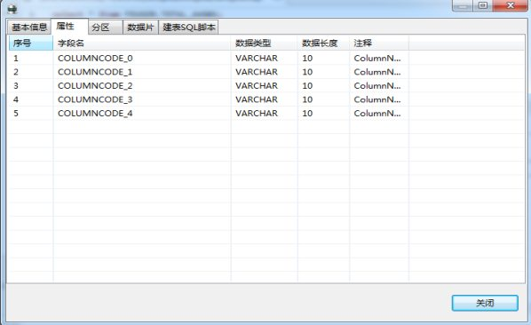

①、以” feurse”（普通用户）用户创建连接成功后，可以查看用户下的所有表，入口有两个，双击“表”，或者右键“表”，单击“表视图”如图
②、表视图中描述了该用户下的所有表名、创建时间、用户名，SLICE数量，数据库名等基本信息。如图
①、右键单击表节点，出现“新建表”如图
②、单击新建表。新建表时需要填写表的基本信息和表属性列．基本信息包括表的所有者，也就是表是属于哪个用户下的，表名称，数据片数，是否是维表，表的描述，如图
③、表属性是表中包含的字段，四个图标，分别是“新增属性”，“删除属性”，“上移”，“下移”。新增属性的时候需填写属性名，数据类型，数据长度，YearOrDay精度，Second精度，TimeStamp精度，是否允许空，分区字段，数据片字段，对属性的描述。所有内容都填写完毕如图
④、单击“查看sql”按钮查看生成表的sql语句，如图
单击复制按钮，创表语句自动复制到系统粘贴板上
⑤、单击“完成”，实现建表，建表成功后会出现如下弹框：
⑥、建表成功后，刷新该节点，左侧树节点增加该表如图：
①、右键单击表节点，粗线刷新菜单，如图
单击刷新，实现刷新
①、右键单击表节点，出现查看数据菜单如下图：
②、单击查看数据，显示表数据面板如下图：
①、查看表有两个入口,右键表名单击查看表如图或者是双击表名。
②、单击“查看表”可以查看表的列属性包含：字段名，数据类型，数据长度和注释等信息，如图：
表的分区包括分区信息和分区数据分布
①、右键单击表实例，出现查看分区菜单如下图：
②、点击查看分区，出现分区信息面板。分区信息主要包括分区key和分区实例列表，分区实例列表包括分区名称，分区段和分区 ID ，分区数据分布主要包括：序号，数据包，数据包大小，数据节点，数据片ID，分区ID。在分区信息栏可以查看分区信息，在分区数据分布栏可以查看分区数据。如下图
①、右键单击分区目录，出现新建分区，如下图：
②、点击新建分区，弹出如图新建分区对话框，有两个图标，，分别为增加属性和删除属性如下图
③、点击添加按钮，填充相关信息，如下图
④、点击查看，会弹出新建分区脚本面板，如下图：
点击复制，脚本自动复制到系统粘贴板上
⑤、点击删除按钮，选中的分区会删除
⑥、点击完成，创建分区成功，如下图
①、右键单击分区节点，出现刷新菜单如图：
②、单击刷新，则表进行信息刷新
①、右键单击分区节点，出现截断菜单，如下图：
②、点击截断，出现截断提示，如下图：
③、点击查看SQL ,出现截断分区脚本面板，如下图：
单击复制，脚本自动复制到系统粘贴板中
④、单击是，完成分区的截断
①、右键单击分区节点，出现复制菜单，如下图：
②、单击复制，分区名称自动复制到系统粘贴板上
①、右键单击分区节点，出现删除菜单，如下图：
②、单击删除，出现删除提示框，如下图：
③、点击查看sql，出现删除分区脚本面板如下图：
单击复制，删除分区脚本自动复制到系统粘贴板上
④、单击确定，完成删除分区操作，原分区节点删除，如下图：
①、右键表节点，出现查看数据片字段如下图
②、单击查看数据片，出现数据片信息面板，数据片信息包括数据片数量和数据片字段，数据分布主要包括序号，数据包，数据包大小，数据节点，数据片ID和分区ID，如下图

①、右键索引节点，出现新建索引菜单，如下图
②、点击新建索引，弹出索引编辑框，其中包含表信息和分区信息 ，选中要建立索引的表信息和分区信息，其中所选分区信息中必须包含数据，如下图：
③、选中部分表信息和分区名如下图：
④、点击查看sql，弹出生成索引的sql脚本，如下图
单击复制，脚本自动复制到系统粘贴板上
⑤、单击完成，实现索引的创建 如下图：
①、右键索引实例节点，出现删除菜单，如下图
②、点击删除，出现消息提示框，如下图
③、单击查看sql，弹出删除索引脚本面板如下图
单击复制，脚本自动复制到系统粘贴板上
④、点击确定按钮，删除索引，如下图：
①、右键索引实例节点，出现复制菜单，如下图
②、点击复制，索引名称自动复制到系统粘贴板上
①、右键表节点，出现生成SQL菜单如下图
②、单击Select 生成查询语句面板，单击Insert 出现插入语句面板，单击Create 出现建表语句面板如下图：
①、右键单击表节点出现截断菜单，如下图
②、单击截断，出现截断弹出框，如下图:
③、单击查看SQL,出现sql面板

单击复制，截断语句则复制到系统粘贴板上
④、单击“是”，如果截断成功则出现如下弹出框

①、右键单击表连接点，出现重命名菜单如下图：
②、单击重命名,输入新的表名如图
③、单击查看sql，如图
单击复制，重命名语句自动复制到系统粘贴板上
④、单击确定，完成重命名，成功则出现如下弹出框
⑤、查看表名，如下图
①、右键单击表节点出现复制菜单，如图：
②、单击复制，表名则复制到系统粘贴板上
①、右键单击表节点，出现删除表菜单如图
②、单击删除，出现提示框，如图：
③、单击查看sql 出现删除语句面板如下图：
单击复制，删除表语句自动复制到系统粘贴板上
④、单击确定，删除表在表节点下删除
①、右键单击表节点，出现刷新菜单如图：

②、单击刷新，则表进行信息刷新
①、右键单击表节点，出现表视图菜单如图：
②、单击表视图，查看表基本信息、属性信息、分区信息、数据片信息和建表脚本相关信息，表基本信息包括：所有者、表名称、数据片数、表类型和表描述，属性包括：序号、字段名、数据类型、数据长度和字段注释，分区信息主要包括分区key和分区实例列表，分区实例列表包括分区名称，分区段和分区 ID ，分区数据分布主要包括：序号，数据包，数据包大小，数据节点，数据片ID，分区ID。在分区信息栏可以查看分区信息，在分区数据分布栏可以查看分区数据，数据片信息包括数据片数量和数据片字段，数据分布主要包括序号，数据包，数据包大小，数据节点，数据片ID和分区ID，如下图


①、通过普通用户登录后，会有一个SYSTEM用户
②、可以对系统表右键查询系统表数据